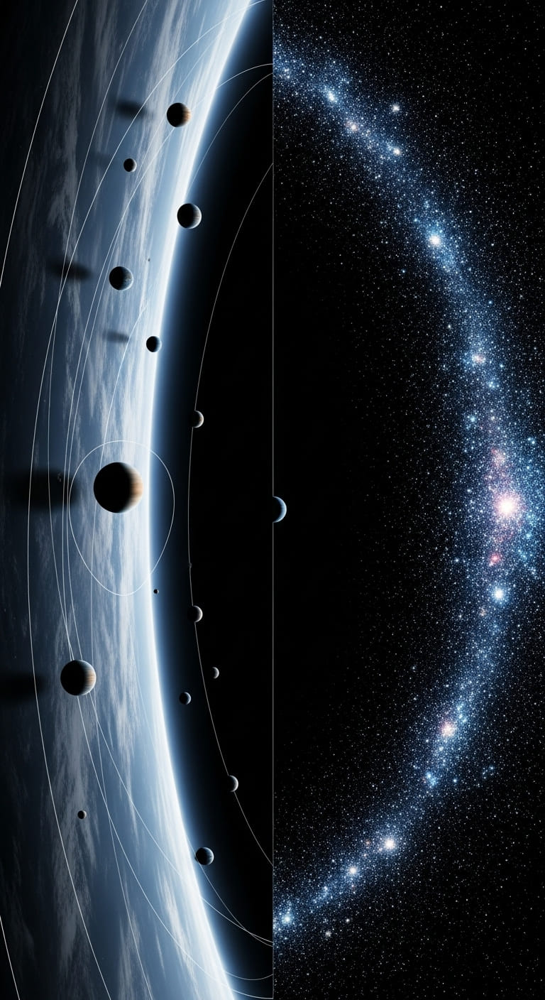
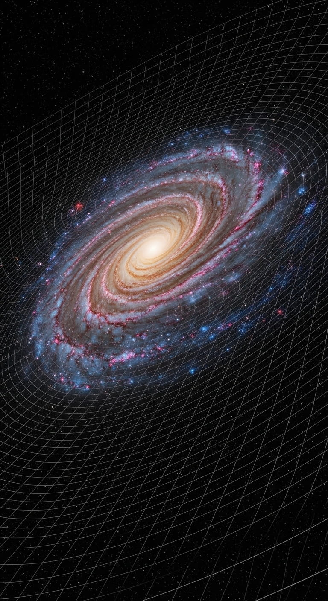
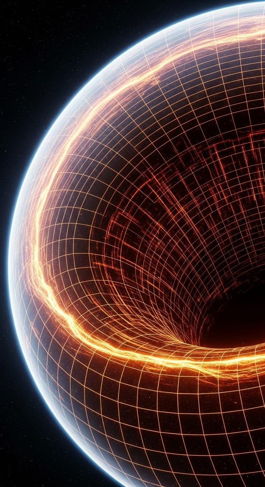

The Emergence of Gravity
Abstract
The Predictive Universe (PU) framework proposes that gravity is not a fundamental force, but an emergent thermodynamic phenomenon arising from a universal network of information-processing agents (Minimal Predictive Units, or MPUs). Governed by a drive for maximum predictive efficiency, this network self-organizes into the smooth fabric of spacetime. Crucially, the framework derives the famous Area Law of black hole entropy from the fundamental, irreversible information limits of MPU interactions - a key premise other theories must assume. By treating the energy cost of prediction as heat and applying thermodynamic laws at every point in space, Einstein's Field Equations emerge as the necessary 'equation of state' that keeps the system in balance. Gravity, in this view, is the geometric response of spacetime to the distribution of predictive work. This emergent nature reinterprets black holes as informational paradoxes, explains the 'dark sector' as gravity's adaptation to its environment, and predicts a new gravitational limit on complex systems.
For a more detailed exploration of these ideas including visualizations:
get the full paper (GitHub).
1. The Enigma of Gravity
At the very core of modern fundamental physics, a profound and persistent schism divides our understanding of the cosmos. On one side stands General Relativity (GR), Einstein's monumental theory of gravity, a masterpiece of classical physics that redefines gravity not as a force, but as the dynamic curvature of spacetime itself. Imagine a cosmic fabric, smooth and continuous, whose geometry is directly influenced by the presence of matter and energy. Planets orbit the sun not because of an invisible pull, but because the sun's mass warps the spacetime around it, guiding the planets along the shortest paths within that curved geometry. GR describes a deterministic universe of immense scales, where space and time are inextricably linked, and phenomena unfold with a continuous flow. It has been confirmed with astonishing precision, from the bending of starlight around massive objects to the existence of gravitational waves rippling through the fabric of the universe.
On the other side is Quantum Field Theory (QFT), the bedrock of the Standard Model of particle physics. QFT describes the other three fundamental forces - the strong, weak, and electromagnetic interactions - through the probabilistic exchange of discrete, force-carrying quanta (particles like photons for electromagnetism or gluons for the strong force). It's a world where energy and matter exist in quantized packets, where particles can be in multiple states at once (superposition), and where distant particles can be instantly linked by entanglement. This theory operates on the microscopic, subatomic scale, treating spacetime as a fixed, static background stage upon which quantum events probabilistically unfold.
The inherent languages and foundational assumptions of these two pillars are fundamentally incompatible. GR speaks of continuous geometry, smooth fields, and deterministic trajectories (at the classical level). QFT speaks of discrete quanta, probabilistic outcomes, and interactions mediated by particle exchange, all occurring on a non-dynamic spacetime. This conceptual divide becomes an impassable chasm at the most extreme frontiers of physical reality:
- Black Hole Singularities: At the heart of a black hole, GR predicts a singularity - a point where spacetime curvature and density become infinite, and its equations break down. Here, matter is crushed to an inconceivable degree, and quantum effects must surely dominate, yet QFT cannot describe gravity in this context.
- The Big Bang: Similarly, at the very beginning of the universe, all matter and energy were compressed into an incredibly hot, dense state. This primordial singularity is another regime where GR and QFT violently clash, unable to offer a coherent picture of creation.
- The Nature of Spacetime Itself: QFT treats spacetime as a passive arena. However, if gravity is quantized, then spacetime itself must become a quantum entity, subject to fluctuations and probabilistic behavior. How can a "quantum spacetime" behave as the fixed background for other quantum fields? This fundamental inconsistency highlights the deep conceptual rift.
The quest to unify these two triumphant yet contradictory descriptions into a single, coherent theory of quantum gravity remains the most significant unsolved problem in physics, representing the ultimate challenge to our understanding of the universe. Generations of physicists have dedicated their careers to this pursuit, attempting to bridge this divide. The persistent, almost intractable difficulty of this problem suggests a radical possibility: perhaps our current framing is flawed. Perhaps gravity is not a fundamental force to be quantized in the same manner as the other forces, but something else entirely - an emergent phenomenon, or an equation of state, arising from a deeper layer of reality.

Universe 00110000
2. The Quest for Quantum Gravity
The journey to understand gravity began with Newton's universal law, a clockwork picture of instantaneous action at a distance. This was shattered by Einstein's revelation: gravity is a manifestation of spacetime's geometry. Matter tells spacetime how to curve, and curved spacetime tells matter how to move. This beautiful, dynamic picture has been verified with breathtaking precision. Yet, it describes a classical, deterministic world at odds with the quantum realm.
The challenge of quantum gravity is to reconcile these two pictures. The main avenues of research have taken two distinct approaches:
- String Theory starts from the quantum side. It posits that the fundamental constituents of reality are not point particles but tiny, vibrating strings in higher dimensions. Different vibrational modes of these strings appear to us as different particles - the electron, the photon, and, crucially, the graviton, the quantum of gravity. In this view, gravity is a fundamental force, just like the others, emerging from the quantum mechanics of a more basic entity.
- Loop Quantum Gravity (LQG) starts from the gravity side. It attempts to apply quantum rules directly to Einstein's geometry. In LQG, spacetime itself is quantized, woven from discrete loops into a "spin network." At the smallest scale, there is no smooth fabric, only a granular, quantum geometry from which classical spacetime emerges at large scales.
Both theories offer profound mathematical insights, but they face immense challenges and have yet to produce experimentally testable predictions that distinguish them. The Predictive Universe framework proposes a third path. It suggests that both quantum mechanics and gravity are emergent phenomena, arising from a deeper layer of reality governed by the principles of information, prediction, and optimization.
3. Whispers of Emergence: A Thermodynamic Clue
A revolutionary clue to the nature of gravity emerged in the 1970s from the study of black holes. The work of Bekenstein and Hawking revealed an astonishing connection between the geometry of a black hole's event horizon and the laws of thermodynamics. They showed that a black hole possesses entropy proportional to the area of its horizon, and that it radiates energy as if it were a thermal object with a specific temperature. This was the first hint that gravity, at its deepest level, might be a macroscopic thermodynamic phenomenon, much like heat and temperature are emergent properties of the microscopic motion of atoms.
In 1995, Ted Jacobson took this idea to its logical conclusion. He demonstrated that if one assumes the entropy of any local causal horizon is proportional to its area (the Area Law) and that the fundamental Clausius relation of thermodynamics (δQ = T δS) holds, then Einstein's Field Equations can be derived as a simple equation of state. In this view, gravity is not fundamental; it is an emergent consequence of the universe demanding local thermodynamic consistency. However, Jacobson's powerful argument began by assuming the Area Law. It did not explain why horizon entropy should be proportional to area, leaving the microscopic origin of this relationship a mystery.
4. The Emergent Gravity Paradigm: 'It from Bit' and Entropic Forces
Jacobson's work was part of a growing paradigm shift in physics, moving away from a substance-based view of reality toward an information-based one. This movement was famously encapsulated by physicist John Archibald Wheeler's maxim, "it from bit," which posits that every physical thing - every particle, every field of force, even spacetime itself - derives its existence and its meaning from the answers to yes-or-no questions, or bits of information.
This information-centric view was powerfully reinforced by the holographic principle. First proposed by Gerard 't Hooft and further developed by Leonard Susskind, the principle emerged from the deep puzzles of string theory and black hole physics. It suggests, that the information content of any volume of space can be fully described by a theory living on its boundary, much like a three-dimensional image (a hologram) is encoded on a two-dimensional surface. This principle implies that our perception of a three-dimensional universe might be a projection of information stored on a distant, lower-dimensional screen.
Building on these ideas, Erik Verlinde proposed in 2011 that gravity is an entropic force. He argued that gravity is not a fundamental interaction but an emergent phenomenon related to the information associated with the position of material bodies. In his model, the tendency for systems to move toward states of higher entropy manifests as the force we call gravity. Much like a stretched rubber band pulls back not due to a fundamental attraction but because the contracted state is entropically favored, masses "attract" each other because their proximity is a state of higher entropy for the underlying information screen of the universe.
These approaches - thermodynamic, holographic, and entropic - all point toward a universe where gravity is an emergent, macroscopic effect. Yet, like Jacobson's derivation, they often begin with high-level principles like the Area Law or holography without providing a complete, bottom-up derivation from a fully specified microscopic theory. They provide compelling evidence for what gravity is, but not a full explanation of why the universe must be this way.
5. The Predictive Universe Solution: Deriving Gravity from First Principles
The Predictive Universe (PU) framework aims to provide this missing microscopic foundation. It does not start by assuming the Area Law; it derives it from the fundamental information-theoretic limits of its constituents. The emergence of gravity within PU is a multi-step, deductive process rooted in the logic and resource economics of prediction.
5.1 The Substrate: A Network of Predictors
At the foundational level of PU, there is no pre-existing spacetime. Reality is constituted by a dynamic, relational network of Minimal Predictive Units (MPUs) These are the building blocks of reality, each a tiny, self-referential predictive system operating cyclically. The "distance" between any two MPUs is a dynamic quantity, defined by the cost and difficulty of propagating predictive information between them. This cost is a real, physical metric, quantified by the fidelity loss and irreducible thermodynamic cost of the interaction. This network of relationships is a discrete structure; all geometric notions like 'length', 'curvature', and 'dimension' must emerge from it.

Universe 00110000
5.2 Efficiency and the Emergence of Spacetime
The MPU network is not static. This process is a prime example of the Principle of Physical Instantiation (PPI) at work. The abstract, logical requirement is that for a universe to be coherently predictable, it must have a stable, regular medium for information to propagate through. The PPI dictates that this logical necessity, when physically embodied by the MPU network, will be shaped by resource optimization.
The network's evolution is governed by the Principle of Compression Efficiency (PCE) - the specific physical mechanism that enforces this optimization. The framework rigorously argues that PCE strongly penalizes the inefficiency of a chaotic or disordered network; information gets lost, predictions lose coherence over distance, and maintaining the system requires exorbitant costs. Consequently, the network is dynamically driven to self-organize into a highly regular, lattice-like structure. This is a state of minimal cost and maximal predictive utility.
When viewed from a macroscopic scale, this discrete, regular network becomes indistinguishable from a smooth, continuous spacetime manifold. Spacetime, therefore, is the thermodynamically optimal and resource-efficient physical solution to the logical problem of creating a stable stage for prediction.
5.3 The Engine of Irreversibility: Information Limits, the Area Law, and the Arrow of Time
The interactions between MPUs, known as the 'Evolve' process, are not perfect exchanges of information. They are fundamentally irreversible and information-limited, a direct consequence of the logical paradoxes of self-reference that lie at the heart of each MPU's predictive cycle. Every 'Evolve' interaction incurs a strictly positive thermodynamic cost ε > 0; for logically irreversible steps, Landauer's principle implies an entropy production of at least ln 2 nats per bit erased. This fundamental cost acts as a ubiquitous thermodynamic ratchet. On one hand, it enforces the unidirectional flow of time, providing a microscopic, dynamical origin for the arrow of time. On the other hand, it makes each interaction a "lossy" information channel with a finite, unbreachable capacity.
This information bottleneck is the key to deriving the Area Law. When we consider a causal boundary, like an event horizon, it acts as a screen through which information must pass via these limited channels. The total amount of distinguishable information that can be encoded on or passed through the boundary is therefore proportional to the number of fundamental interaction channels that pierce its surface. Since the network is geometrically regular, the number of these channels is directly proportional to the area of the boundary. This leads directly to the Horizon Entropy Area Law: the maximum entropy of a region is fundamentally limited by, and proportional to, its boundary area.
Crucially, the constant of proportionality in this derived Area Law defines the emergent gravitational constant, G, linking it directly to the microscopic parameters of the MPU network, such as the average MPU spacing (δ) and the channel capacity (Cmax), while the field‑equation derivation itself requires only area proportionality. In PU, the strength of gravity is a direct measure of the information capacity of the universe's fundamental substrate.
Smax = kB A / (4 LP2)
(The Area Law, derived from MPU information limits)
5.4 The Equation of State: Gravity from Local Thermodynamic Consistency
With the Area Law in hand, and under the following assumptions - (i) local thermodynamic equilibrium with Unruh temperature on local Rindler horizons; (ii) horizon entropy proportional to area with a fixed coefficient; (iii) applicability of the linearized Raychaudhuri equation with appropriate initial data; and (iv) validity for all null generators - the final step mirrors Jacobson's insight. The PU framework identifies the flow of "heat" (δQ) across a local horizon with the flux of the macroscopic MPU Stress-Energy Tensor (Tμν(MPU)). This tensor is a profound concept: it represents the coarse-grained density and flow of the very resource costs - complexity, computation, and interaction energy - that the MPU network is constantly optimizing. It is the energy of predictive work.
By postulating that the universe must maintain local thermodynamic equilibrium, we apply the Clausius relation, δQ = T δS, to every infinitesimal patch of every local causal horizon.
- δS is determined by the change in horizon area via the derived Area Law.
- T is the local Unruh temperature associated with the horizon, representing the thermal noise experienced by an accelerating observer.
- δQ is the flux of energy associated with the MPU network's predictive activity.
The requirement that this thermodynamic relationship holds universally - for all observers and at all points - imposes a powerful and inescapable constraint on the geometry of spacetime. The only way for the system to remain consistent is for the curvature of spacetime to respond precisely to the distribution of stress-energy. This necessary relationship is expressed by Einstein's Field Equations.
Rμν - ½ R gμν + Λ gμν = (8πG / c4) Tμν(MPU)
The EFE emerge as the macroscopic equation of state for the emergent spacetime manifold, ensuring that the geometry always adapts to maintain local thermodynamic consistency with the underlying information-processing dynamics of the MPU network.
5.5 The Scale of Gravity: A Summary Formula
Gravity therefore appears as a macroscopic, thermodynamic consequence of predictive-network dynamics, with its scale fixed by the underlying MPU information parameters, succinctly summarised by:
where ΣI = σlink Cmax(fRID) represents the effective horizon information density. This crucial term combines the surface density of effective information channels, σlink (with dimensions L-2), and the dimensionless channel-capacity bound of the underlying interactions, Cmax. The surface density σlink is determined by the effective MPU spacing δ, a geometric packing factor η, and a correlation factor χ (where χ ≤ 1) that accounts for non-independence between channels, typically scaling as σlink = χ/(ηδ2). The capacity Cmax is fundamentally limited by the irreducible thermodynamic cost of self-referential processing, ε ≥ ln 2.
6. Implications of Emergent Gravity: Beyond the Standard Picture
Deriving gravity from the thermodynamics of prediction has profound consequences that extend far beyond a simple reinterpretation of Einstein's equations. This emergent view offers novel perspectives on some of the deepest puzzles in physics: the nature of black holes and the mystery of the "dark sector" of the cosmos.
6.1 Black Holes as Informational Boundaries
In the PU framework, black holes are the ultimate expression of the universe's informational limits. The event horizon is a boundary where the MPU network's capacity to process and transmit distinguishable information reaches saturation. This perspective provides a new lens through which to view the Black Hole Information Paradox.
The paradox arises because the seemingly thermal nature of Hawking radiation implies that information about what fell into the black hole is permanently lost, violating the quantum principle of unitarity. The PU framework reframes this as a problem of expansive reflexivity. An external observer attempting to decode the information by measuring outgoing Hawking radiation is engaged in a reflexive process: each measurement extracts energy, altering the black hole's state. As the black hole evaporates, its dynamics accelerate, and the impact of each measurement becomes proportionally larger. The "problem" of the black hole's state changes faster than the "solution" (the information) can be extracted, creating a logical and computational infinite regress that makes recovery impossible via this channel.
The PU framework posits that each quantum emission ('Evolve' event) produces not just a particle, but also a specific interaction context, or perspective. The information of the initial state is not lost; it is encoded in the highly correlated sequence of these perspectives over the black hole's entire lifetime. This proposed Perspectival Information Channel bypasses the reflexive loop of measurement while remaining consistent with no deterministic faster‑than‑light signaling and AQFT locality; it preserves unitarity in principle. An observer who could measure only the energy of the radiation would see a thermal bath, while the true information flows out, hidden in the contextual fabric of the emission process.
6.2 A Unified Dark Sector: Gravity's Adaptation to Information
Perhaps the most radical implication of emergent gravity is that the gravitational "constant," G, is not fundamental. It is a macroscopic parameter of the MPU network, determined by the network's density (MPU spacing δ) and its information capacity (Cmax). Because the network is governed by the Principle of Compression Efficiency, these parameters can adapt to the local information environment.
This leads to a natural explanation for the phenomena attributed to dark matter. In dense regions of the universe, like the core of a galaxy, there is a rich stream of information to predict. PCE drives the MPU network into a high-performance configuration: densely packed MPUs with high-capacity communication channels. In the sparse, information-poor regions of a galaxy's outskirts, maintaining such a costly network is inefficient. PCE drives a "parameter relaxation": the MPU spacing δ increases, and the channel capacity Cmax decreases. According to the derived formula for G, both of these changes cause the effective strength of gravity to increase at large scales.
This scale‑dependent gravity is mathematically equivalent to an effective dark‑matter halo and can reproduce key regularities (for example, the radial‑acceleration relation) without introducing new particles; quantitative tests against rotation curves, lensing, and clusters are essential. The same principle, applied on cosmological scales, suggests that the phenomenon labeled dark energy may reflect slow, global adaptation of the MPU network's parameters to the evolving mean density. In this view, the dark sector is the macroscopic signature of gravity's adaptation to the information content of the cosmos.

Universe 00110000
7. Conclusion: Gravity as the Thermodynamics of Prediction
The Predictive Universe framework offers a conditional, first‑principles pathway to emergent gravity. It resolves the core enigma by reframing gravity as a macroscopic, thermodynamic phenomenon, not a fundamental quantum force. Spacetime is the emergent geometric stage built by a network of predictive agents optimizing for efficiency. The Area Law is a direct consequence of the information limits inherent in their irreversible interactions. And gravity, as described by Einstein's Field Equations, is the universe's way of ensuring that the geometry of this stage remains in constant thermodynamic equilibrium with the predictive work being performed upon it. This thermodynamic origin for gravity is a direct consequence of the framework's foundational premise: that reality is fundamentally an informational process, and that the laws of physics are the emergent, resource-efficient rules governing that process. From the paradoxes of black holes to the mysteries of the dark sector, this perspective suggests that the deepest secrets of the cosmos are written in the language of prediction, information, and thermodynamic necessity. The curvature of spacetime is the shadow cast by the universe's collective act of prediction.